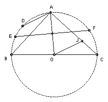

BC is a diameter of a circle center O. A is any point on the circle with angle AOC > 60o. EF is the chord which is the perpendicular bisector of AO. D is the midpoint of the minor arc AB. The line through O parallel to AD meets AC at J. Show that J is the incenter of triangle CEF.
Solution

F is equidistant from A and O. But OF = OA, so OFA is equilateral and hence angle AOF = 60o. Since angle AOC > 60o, F lies between A and C. Hence the ray CJ lies between CE and CF.
D is the midpoint of the arc AB, so angle DOB = ½ angle AOB = angle ACB. Hence DO is parallel to AC. But OJ is parallel to AD, so AJOD is a parallelogram. Hence AJ = OD. So AJ = AE = AF, so J lies on the opposite side of EF to A and hence on the same side as C. So J must lie inside the triangle CEF.
Also, since EF is the perpendicular bisector of AO, we have AE = AF = OE, so A is the center of the circle through E, F and J. Hence angle EFJ = ½ angle EAJ. But angle EAJ = angle EAC (same angle) = angle EFC. Hence J lies on the bisector of angle EFC.
Since EF is perpendicular to AO, A is the midpoint of the arc EF. Hence angle ACE = angle ACF, so J lies on the bisector of angle ECF. Hence J is the incenter.
Many thanks to Dirk Laurie for pointing out that the original version of this solution failed to show the relevance of angle AOC > 60o. According to the official marking scheme, one apparently lost a mark for failing to show J lies inside CEF.

© John Scholes
jscholes@kalva.demon.co.uk
26 Aug 2002
Last corrected/updated 18 Oct 2002